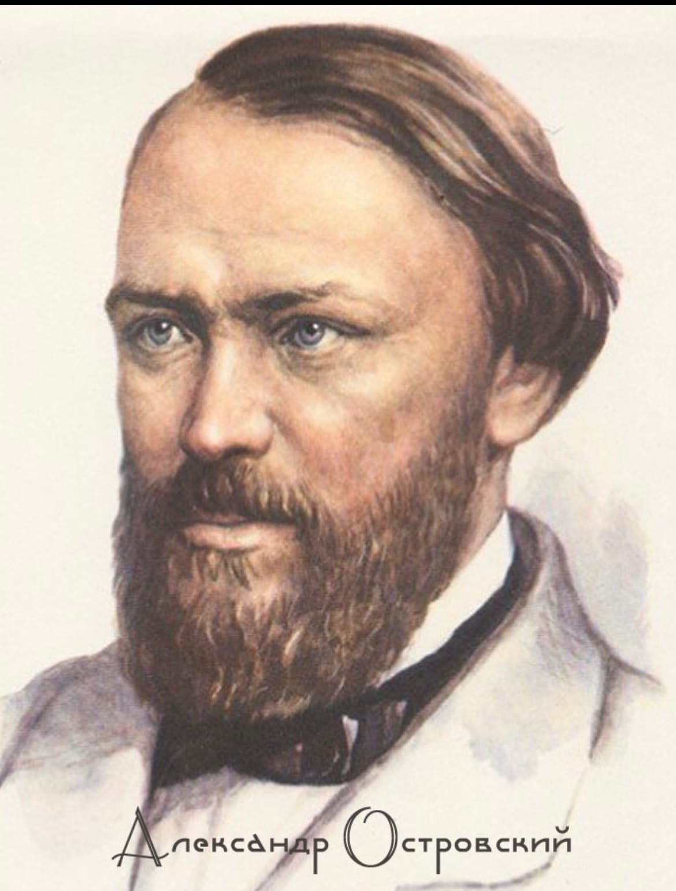
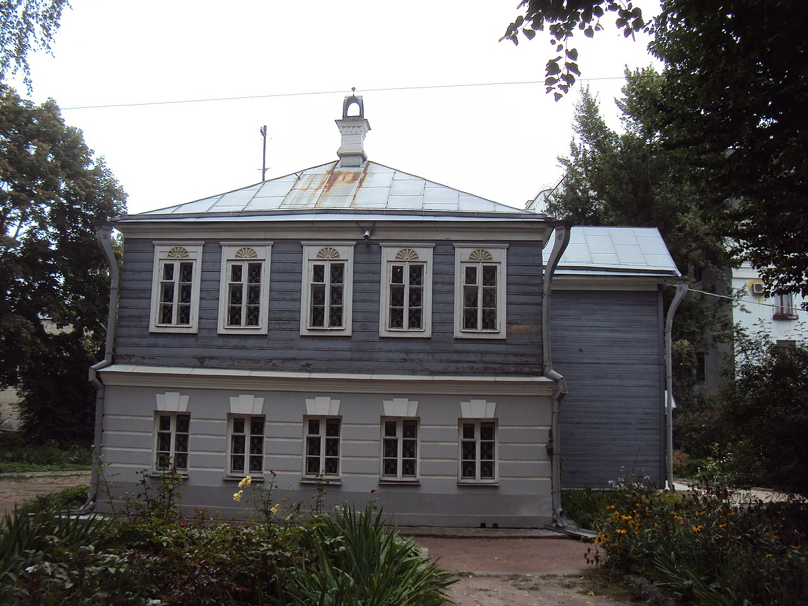
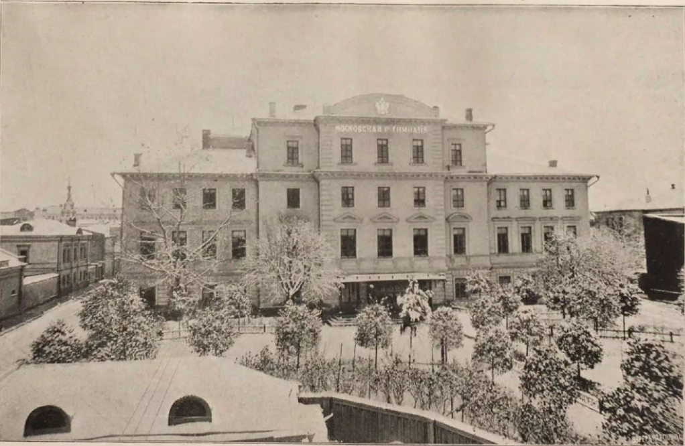
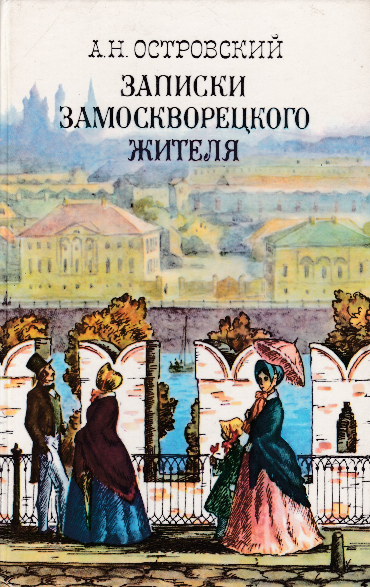
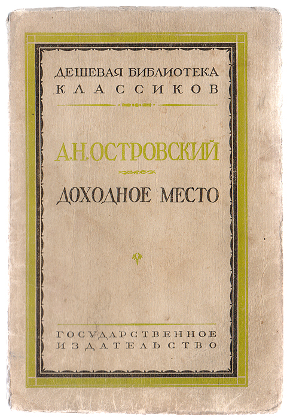
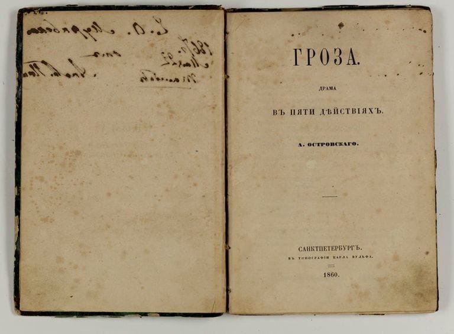
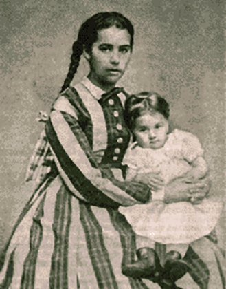
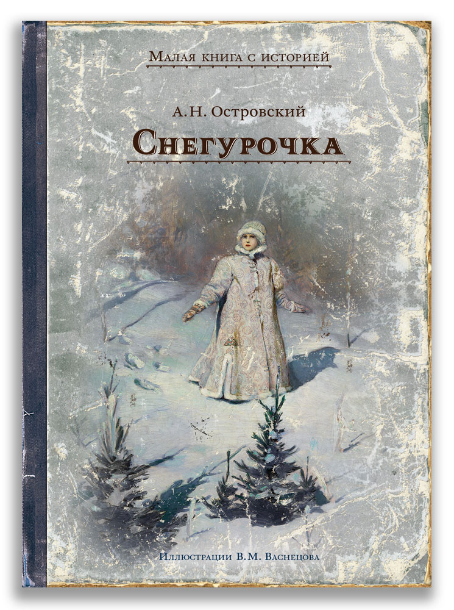
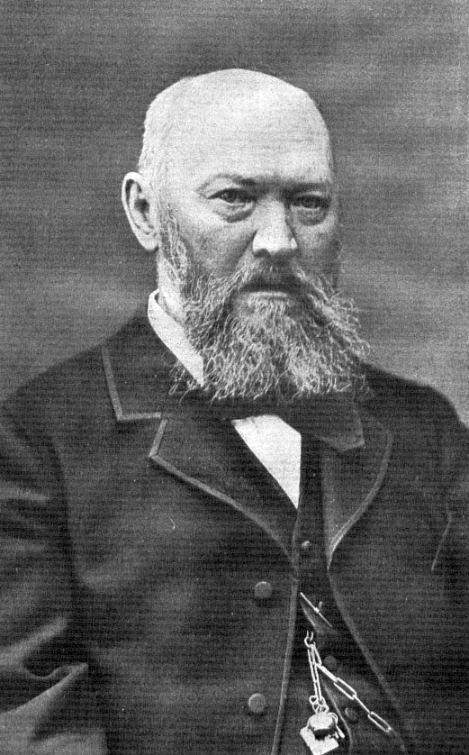

Кто такой А.Н. Островский
Александра Островского называли основоположником национального театра. Он сочинил 47 пьес, защищал авторские права драматургов и разработал программу обучения для драматических классов. Критик Иван Гончаров говорил: «Литературе Вы принесли в дар целую библиотеку художественных произведений, для сцены создали свой особый мир. Вы один достроили здание, в основание которого положили краеугольные камни Фонвизин, Грибоедов, Гоголь».
Детство и юношество
Александр Островский родился в Москве. Его отец, Николай Островский, окончил духовную академию, но выбрал светскую профессию и служил чиновником в суде. Мать, Любовь Островская, следила за хозяйством и воспитывала четверых детей. Помимо основной работы Николай Островский занимался частной адвокатской практикой. Друг будущего драматурга поэт Николай Берг писал: «В доме с утра до ночи толклись купцы, решая разные свои вопросы. Мальчик Островский видел там не одного банкрута, а целые десятки; а разговоров о банкротстве наслушался и бог весть сколько: не мудрено, что язык купцов стал некоторым образом его языком. Он усвоил его себе до тонкости. Иное, в особенности хлесткое и меткое, записывал (как сам мне признавался)». Александр Островский занимался танцами и пением, учил французский и немецкий языки, а из домашней библиотеки отца часто брал книги Василия Тредиаковского, Василия Жуковского, Александра Пушкина.
В 1835 году Александр Островский поступил в Первую Московскую гимназию. Там он увлекся литературой и театральным искусством, в свободное время играл в драматическом кружке. Актёр Федор Бурдин вспоминал: «Александр Николаевич был старше нас на три класса, и тогда уже он любил театр, часто посещал его; мы с великим удовольствием и интересом слушали его мастерские рассказы об игре Мочалова, Щепкина, Львовой-Синецкой».
Первое известное произведение
 В 1843 году отец устроил Островского в канцелярию Совестного суда, где в основном рассматривали семейные имущественные споры. Самые интересные дела он втайне переписывал в отдельную тетрадь, там же помечал поведение и внешность истцов и ответчиков. Вечерами он пробовал сочинять и к 1847 году закончил свой первый очерк «Записки замоскворецкого жителя». В предисловии литератор писал: «Автор описывает Замоскворечье в праздник и в будни, в горе и в радости, описывает, что творится по большим длинным улицам и по мелким, частым переулкам». Произведение опубликовали в газете «Московский городской листок». Островский вспоминал: «Самый памятный день в моей жизни 14 февраля 1847 года. С этого дня я стал считать себя русским писателем и уже без сомнений и колебаний поверил в свое признание». Это был день, когда драматург прочитал свою пьесу на вечере у профессора Московского университета Степана Шевырева.
Экспедиция на Волгу
 Летом 1856 года Александр Островский поехал в этнографическую экспедицию по Волге. Ее организовало Морское министерство. Он побывал в Твери, Городне, Торжке, Осташкове, Ржеве и многих других городах. В его задачи входило описать быт и нравы местных жителей. В самом начале экспедиции с Островским произошел несчастный случай: лошади понесли, и тарантас перевернулся. За несколько месяцев, пока драматург лежал со сложными переломами, он написал пьесу «Доходное место». Во время поездки Островский записывал истории местных купцов. Одна из них легла в основу произведения «Не сошлись характерами» о браке между обедневшим дворянином и богатой купеческой дочерью. Вскоре писатель закончил пьесу «Воспитанница», а в 1859 году при содействии графа Григория Кушелева-Безбородко напечатали первое собрание сочинений Островского в двух томах. Спустя несколько месяцев драматург написал драму «Гроза». В 1863 году за пьесу «Гроза» Островского наградили Уваровской премией, которую вручали за сочинения по русской истории.
 В 1865 году Александр Островский вместе с пианистом Николаем Рубинштейном и писателем Владимиром Одоевским создал в Москве Артистический кружок — общественную организацию для деятелей искусства. В 1867 году Островский написал либретто к опере «Гроза» композитора Владимира Кашперова, одного из членов кружка.
Личная жизнь
 Со своей первой возлюбленной, Агафьей Островской, драматург познакомился в 1846 году. Она снимала небольшие комнаты недалеко от дома писателя. Вскоре они стали жить вместе, однако церковный брак не заключили. Островская не умела писать и читать, и в свободное время литератор обучал ее грамоте. Однако, когда он создавал комедии, советовался именно с ней. Она поддерживала его во всем. С ней Островский прожил около двадцати лет. А в 1869 году женился на артистке Марии Васильевне Бахметьевой. В конце 1860-х годов Островский увлекся периодом Смутного времени и написал несколько исторических драм: «Тушино», «Дмитрий Самозванец и Василий Шуйский», «Василиса Мелентьева».
«Современник»
 А в 1873 году по просьбе комиссии управления императорскими московскими театрами Островский написал сказку «Снегурочка». Малый театр закрыли на ремонт, а труппа объединилась с коллективом Большого. Поэтому нужна была пьеса, в которой вместе участвовали артисты балета, драмы и оперы. Музыку к произведению заказали молодому композитору Петру Чайковскому. О работе с Островским музыкант вспоминал: «Весна стояла чудная; у меня на душе было хорошо, как и всегда при приближении лета. Пьеса Островского мне нравилась, и я в три недели, без всякого усилия, написал музыку. Мне кажется, что в этой музыке должно быть заметно радостное настроение, которым я тогда был проникнут».
Смерть
 До конца своей жизни Островский испытывал материальные трудности, журналы часто задерживали гонорары. Напряженная работа сильно истощала организм, а здоровье все чаще подводило писателя. Островский мечтал о возрождении театральной школы, в которой можно бы было обучать профессиональному актерскому мастерству, однако смерть писателя помешала осуществить давно задуманные планы. Островский скончался от болезни сердца в своём имении Щелыково.